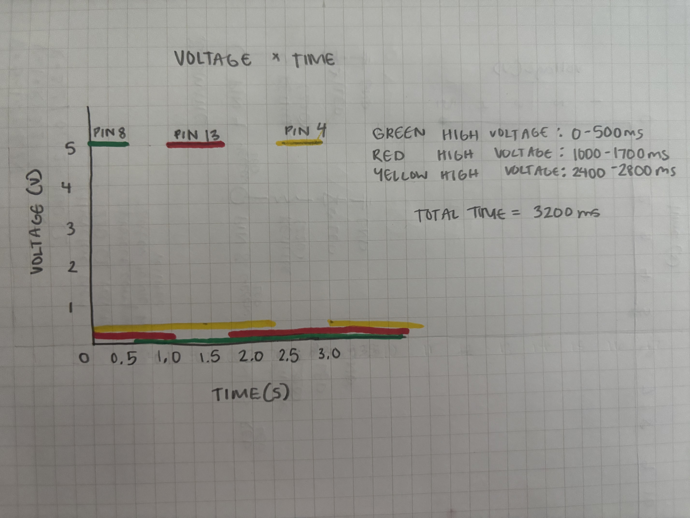

Schematic
Image of my schematic for the circuit & resistance calculation.
'Fade' Circuit Documentation

This is my 'Blink' circuit. The breadboard is connected to the Arduino with:
- Green wire → pin 8
- Red wire → pin 13
- Yellow wire → pin 4
- Black wire → GND
Code
// the setup function runs once when you press reset or power the board
void setup() {
// initialize digital pin LED_BUILTIN as an output.
pinMode(8, OUTPUT);
pinMode(13, OUTPUT);
pinMode(4, OUTPUT);
}
// the loop function runs over and over again forever
void loop() {
digitalWrite(8, HIGH); // turn the green LED on (HIGH is the voltage level)
delay(500); // wait for a second
digitalWrite(8, LOW); // turn the green LED off by making the voltage LOW
delay(500);
digitalWrite(13, HIGH); // turn the red LED on (HIGH is the voltage level)
delay(700); // wait for a second
digitalWrite(13, LOW); // turn the red LED off by making the voltage LOW
delay(700);
digitalWrite(4, HIGH); // turn the yellow LED on (HIGH is the voltage level)
delay(400); // wait for a second
digitalWrite(4, LOW); // turn the yellow LED off by making the voltage LOW
delay(400); // wait for a second
}
Operation Video
Video of my circuit in action, lighting up 3 LEDs at different times.
Questions
1. Voltage x Time Graph
I chose the blink times (500ms, 700ms, 400ms) randomly while writing the code. The graph shows the high (on) and low (off) times for each LED over a 3200ms cycle (1000ms green + 1400ms red + 800ms yellow).
2. Max Current
If powered by a 1200 mAh battery, it would take approximately 60 hours to drain the battery when running this circuit, assuming each LED draws about 20mA when lit and they are not all on at the same time.
3. Voltage
When measuring the voltage of my red LED, I got 2.03V. This is because red LEDs typically have a forward voltage of around 2.0V, which is the voltage drop across the LED when it is lit. This compares to the theoretical voltage of 2.0V for red LEDs, indicating that my measurement is accurate and consistent with expected values.
4. Help Used
None